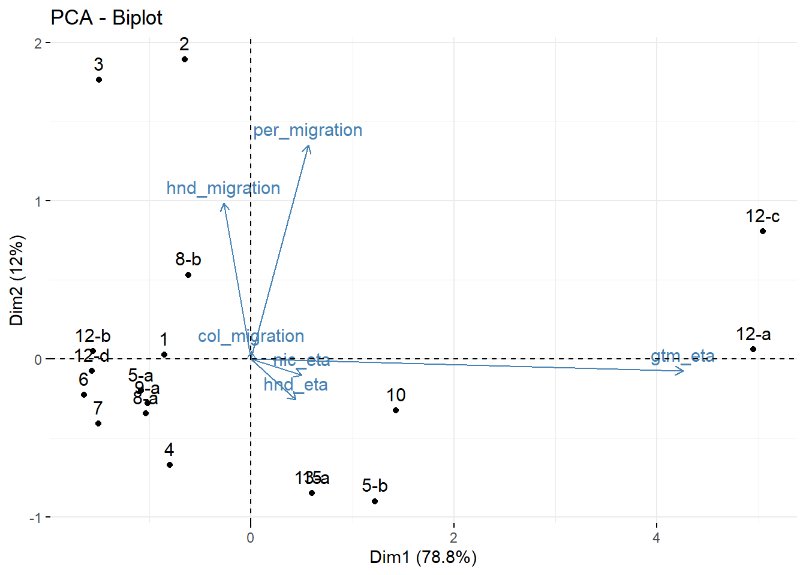
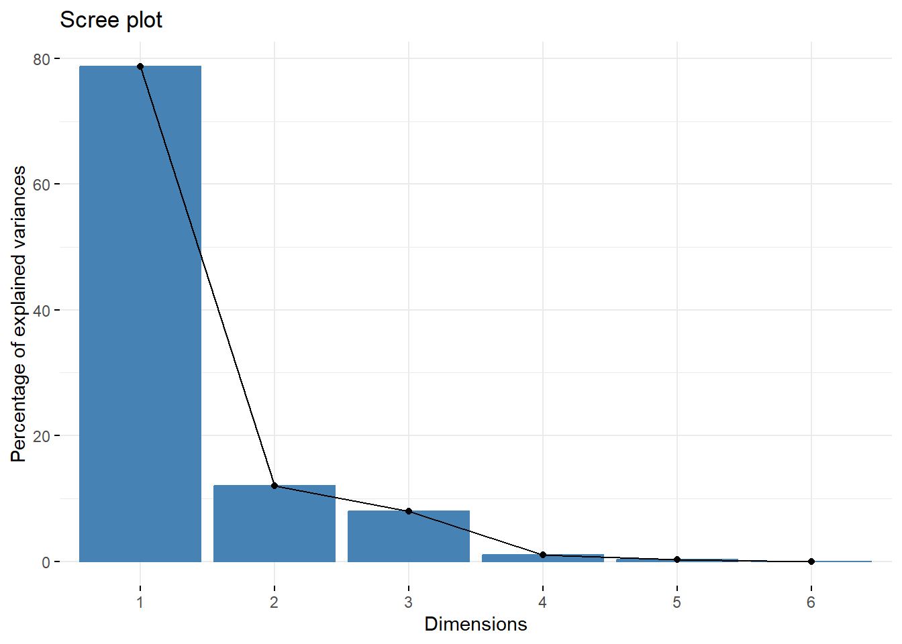
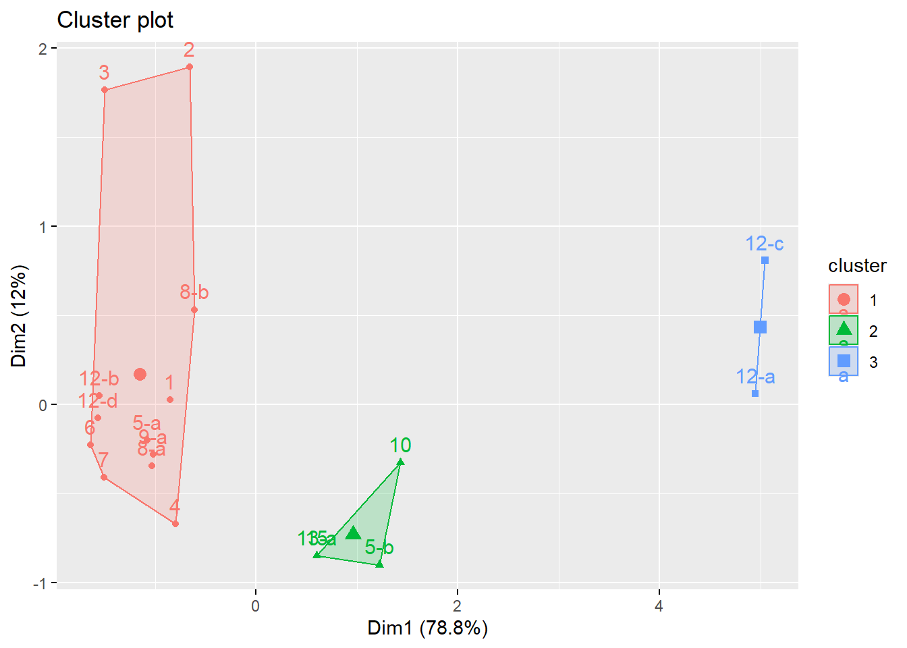
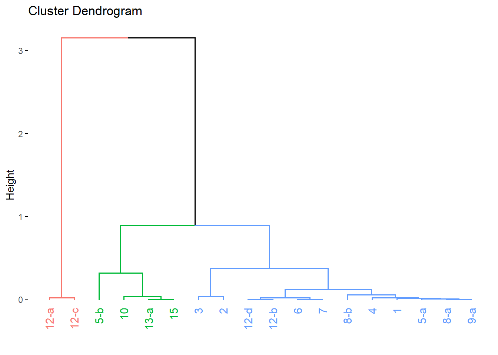

| Input coverages used in LiST | |||||
|---|---|---|---|---|---|
| Emergency | Country | Target group | Intervention name | Coverage (%) | Intervention name in LiST |
| Eta-Iota | Guatemala | Children under 5 | 1. Provision of breastfeeding counseling for primary caregivers of children under 2, including support to exclusive breastfeeding for infants under 6 months. | 70.8 | Breastfeeding promotion |
| Eta-Iota | Guatemala | Children under 5 | 2. Provision of complementary feeding counseling for primary caregivers of children 6-23 months. | 70.8 | Complementary feeding - supplementary feeding and education |
| Eta-Iota | Guatemala | Children under 5 | 7. Vitamin A supplementation for children from 6 to 59 months. | 10.8 | Vitamin A supplementation |
| Eta-Iota | Guatemala | Children under 5 | 9-a. Treatment of children 6 to 59 months for acute malnutrition (wasting). | 52.0 | Treatment for MAM |
| Eta-Iota | Guatemala | Pregnant and lactating women | 12-a. Provide iron supplementation for pregnant and lactating women. | 95.0 | Iron supplementation in pregnancy |
| Eta-Iota | Guatemala | Pregnant and lactating women | 12-b. Provide folic acid supplementation for pregnant and lactating women. | 0.0 | Folic acid fortification/supplementation |
| Eta-Iota | Guatemala | Pregnant and lactating women | 12-c. Provide iron and folic acid supplementation for pregnant and lactating women. | 95.0 | Iron and folic acid supplementation in pregnancy |
| Eta-Iota | Guatemala | Pregnant and lactating women | 12-d. Provide multiple micronutrient supplementation for pregnant and lactating women. | 0.0 | Multiple micronutrient supplementation (iron and multiple micronutrients) in pregnancy |
| Eta-Iota | Guatemala | Pregnant and lactating women | 14. Treatment of undernutrition in pregnant and lactating women (energy-protein supplementation). | 0.0 | Balanced energy supplementation |
| Eta-Iota | Honduras | Children under 5 | 1. Provision of breastfeeding counseling for primary caregivers of children under 2, including support to exclusive breastfeeding for infants under 6 months. | 46.6 | Breastfeeding promotion |
| Eta-Iota | Honduras | Children under 5 | 2. Provision of complementary feeding counseling for primary caregivers of children 6-23 months. | 46.6 | Complementary feeding - supplementary feeding and education |
| Eta-Iota | Honduras | Children under 5 | 7. Vitamin A supplementation for children from 6 to 59 months. | 12.2 | Vitamin A supplementation |
| Eta-Iota | Honduras | Children under 5 | 9-a. Treatment of children 6 to 59 months for acute malnutrition (wasting). | 21.0 | Treatment for MAM |
| Eta-Iota | Honduras | Pregnant and lactating women | 12-a. Provide iron supplementation for pregnant and lactating women. | 65.5 | Iron supplementation in pregnancy |
| Eta-Iota | Honduras | Pregnant and lactating women | 12-b. Provide folic acid supplementation for pregnant and lactating women. | 0.0 | Folic acid fortification/supplementation |
| Eta-Iota | Honduras | Pregnant and lactating women | 12-c. Provide iron and folic acid supplementation for pregnant and lactating women. | 65.5 | Iron and folic acid supplementation in pregnancy |
| Eta-Iota | Honduras | Pregnant and lactating women | 12-d. Provide multiple micronutrient supplementation for pregnant and lactating women. | 0.0 | Multiple micronutrient supplementation (iron and multiple micronutrients) in pregnancy |
| Eta-Iota | Honduras | Pregnant and lactating women | 14. Treatment of undernutrition in pregnant and lactating women (energy-protein supplementation). | 0.0 | Balanced energy supplementation |
| Eta-Iota | Nicaragua | Children under 5 | 1. Provision of breastfeeding counseling for primary caregivers of children under 2, including support to exclusive breastfeeding for infants under 6 months. | 49.0 | Breastfeeding promotion |
| Eta-Iota | Nicaragua | Children under 5 | 2. Provision of complementary feeding counseling for primary caregivers of children 6-23 months. | 49.0 | Complementary feeding - supplementary feeding and education |
| Eta-Iota | Nicaragua | Children under 5 | 7. Vitamin A supplementation for children from 6 to 59 months. | 12.1 | Vitamin A supplementation |
| Eta-Iota | Nicaragua | Children under 5 | 9-a. Treatment of children 6 to 59 months for acute malnutrition (wasting). | 61.6 | Treatment for MAM |
| Eta-Iota | Nicaragua | Pregnant and lactating women | 12-a. Provide iron supplementation for pregnant and lactating women. | 84.8 | Iron supplementation in pregnancy |
| Eta-Iota | Nicaragua | Pregnant and lactating women | 12-b. Provide folic acid supplementation for pregnant and lactating women. | 0.0 | Folic acid fortification/supplementation |
| Eta-Iota | Nicaragua | Pregnant and lactating women | 12-c. Provide iron and folic acid supplementation for pregnant and lactating women. | 84.8 | Iron and folic acid supplementation in pregnancy |
| Eta-Iota | Nicaragua | Pregnant and lactating women | 12-d. Provide multiple micronutrient supplementation for pregnant and lactating women. | 0.0 | Multiple micronutrient supplementation (iron and multiple micronutrients) in pregnancy |
| Eta-Iota | Nicaragua | Pregnant and lactating women | 14. Treatment of undernutrition in pregnant and lactating women (energy-protein supplementation). | 0.0 | Balanced energy supplementation |
| Migration flows | Colombia | Children under 5 | 1. Provision of breastfeeding counseling for primary caregivers of children under 2, including support to exclusive breastfeeding for infants under 6 months. | 1.5 | Breastfeeding promotion |
| Migration flows | Colombia | Children under 5 | 2. Provision of complementary feeding counseling for primary caregivers of children 6-23 months. | 11.9 | Complementary feeding - supplementary feeding and education |
| Migration flows | Colombia | Children under 5 | 7. Vitamin A supplementation for children from 6 to 59 months. | 0.5 | Vitamin A supplementation |
| Migration flows | Colombia | Children under 5 | 9-a. Treatment of children 6 to 59 months for acute malnutrition (wasting). | 1.2 | Treatment for MAM |
| Migration flows | Colombia | Pregnant and lactating women | 12-a. Provide iron supplementation for pregnant and lactating women. | 2.1 | Iron supplementation in pregnancy |
| Migration flows | Colombia | Pregnant and lactating women | 12-b. Provide folic acid supplementation for pregnant and lactating women. | 1.3 | Folic acid fortification/supplementation |
| Migration flows | Colombia | Pregnant and lactating women | 12-c. Provide iron and folic acid supplementation for pregnant and lactating women. | 3.4 | Iron and folic acid supplementation in pregnancy |
| Migration flows | Colombia | Pregnant and lactating women | 12-d. Provide multiple micronutrient supplementation for pregnant and lactating women. | 1.1 | Multiple micronutrient supplementation (iron and multiple micronutrients) in pregnancy |
| Migration flows | Colombia | Pregnant and lactating women | 14. Treatment of undernutrition in pregnant and lactating women (energy-protein supplementation). | 0.0 | Balanced energy supplementation |
| Migration flows | Honduras | Children under 5 | 1. Provision of breastfeeding counseling for primary caregivers of children under 2, including support to exclusive breastfeeding for infants under 6 months. | 87.8 | Breastfeeding promotion |
| Migration flows | Honduras | Children under 5 | 2. Provision of complementary feeding counseling for primary caregivers of children 6-23 months. | 95.0 | Complementary feeding - supplementary feeding and education |
| Migration flows | Honduras | Children under 5 | 7. Vitamin A supplementation for children from 6 to 59 months. | 24.9 | Vitamin A supplementation |
| Migration flows | Honduras | Children under 5 | 9-a. Treatment of children 6 to 59 months for acute malnutrition (wasting). | 34.6 | Treatment for MAM |
| Migration flows | Honduras | Pregnant and lactating women | 12-a. Provide iron supplementation for pregnant and lactating women. | 25.1 | Iron supplementation in pregnancy |
| Migration flows | Honduras | Pregnant and lactating women | 12-b. Provide folic acid supplementation for pregnant and lactating women. | 15.6 | Folic acid fortification/supplementation |
| Migration flows | Honduras | Pregnant and lactating women | 12-c. Provide iron and folic acid supplementation for pregnant and lactating women. | 40.9 | Iron and folic acid supplementation in pregnancy |
| Migration flows | Honduras | Pregnant and lactating women | 12-d. Provide multiple micronutrient supplementation for pregnant and lactating women. | 13.0 | Multiple micronutrient supplementation (iron and multiple micronutrients) in pregnancy |
| Migration flows | Honduras | Pregnant and lactating women | 14. Treatment of undernutrition in pregnant and lactating women (energy-protein supplementation). | 0.0 | Balanced energy supplementation |
| Migration flows | Peru | Children under 5 | 1. Provision of breastfeeding counseling for primary caregivers of children under 2, including support to exclusive breastfeeding for infants under 6 months. | 42.8 | Breastfeeding promotion |
| Migration flows | Peru | Children under 5 | 2. Provision of complementary feeding counseling for primary caregivers of children 6-23 months. | 95.0 | Complementary feeding - supplementary feeding and education |
| Migration flows | Peru | Children under 5 | 7. Vitamin A supplementation for children from 6 to 59 months. | 21.3 | Vitamin A supplementation |
| Migration flows | Peru | Children under 5 | 9-a. Treatment of children 6 to 59 months for acute malnutrition (wasting). | 38.2 | Treatment for MAM |
| Migration flows | Peru | Pregnant and lactating women | 12-a. Provide iron supplementation for pregnant and lactating women. | 95.0 | Iron supplementation in pregnancy |
| Migration flows | Peru | Pregnant and lactating women | 12-b. Provide folic acid supplementation for pregnant and lactating women. | 81.7 | Folic acid fortification/supplementation |
| Migration flows | Peru | Pregnant and lactating women | 12-c. Provide iron and folic acid supplementation for pregnant and lactating women. | 95.0 | Iron and folic acid supplementation in pregnancy |
| Migration flows | Peru | Pregnant and lactating women | 12-d. Provide multiple micronutrient supplementation for pregnant and lactating women. | 68.0 | Multiple micronutrient supplementation (iron and multiple micronutrients) in pregnancy |
| Migration flows | Peru | Pregnant and lactating women | 14. Treatment of undernutrition in pregnant and lactating women (energy-protein supplementation). | 0.0 | Balanced energy supplementation |
Results - Cost of Inaction
This document compiles the core figures and tables supporting the final Cost of Inaction (CoI) study, structured by analytical component. It is intended to support reporting and review, not for direct publication.
Result tables and figures
LiST model coverage inputs
These inputs represent the baseline and targeted intervention coverage values used in LiST simulations for each emergency scenario.
Coverage of interventions needed respective to nutrition needs
| Coverage of interventions needed respective to nutrition needs | ||||||
|---|---|---|---|---|---|---|
| Intervention name |
Eta-Iota
|
Migration flows
|
||||
| Interventions delivered | Interventions needed | Eta-Iota coverage (%) | Interventions delivered | Interventions needed | Migration coverage (%) | |
| 1. Provision of breastfeeding counseling for primary caregivers of children under 2, including support to exclusive breastfeeding for infants under 6 months. | 46,216 | 84,965 | 54.39 | 8,307 | 192,237 | 4.32 |
| 2. Provision of complementary feeding counseling for primary caregivers of children 6-23 months. | 46,216 | 84,965 | 54.39 | 30,658 | 192,237 | 15.95 |
| 3. Support infants 0-6 months who cannot be breastfed. | 1,601 | 42,348 | 3.78 | 8,356 | 95,835 | 8.72 |
| 4. Deworming for children 12-59 months. | 99,089 | 171,632 | 57.73 | 3,776 | 385,949 | 0.98 |
| 5-a. Multiple-micronutrient supplementation for children from 6 to 59 months. | 62,713 | 213,980 | 29.31 | 13,401 | 481,784 | 2.78 |
| 5-b. Iron supplementation for children from 6 to 59 months. | 213,980 | 213,980 | 100.00 | 10,593 | 481,784 | 2.20 |
| 6. Energy-protein supplementation for children 6-59 months (prevention of acute malnutrition in food insecurity contexts). | 0 | 213,980 | 0.00 | 11,970 | 481,784 | 2.48 |
| 7. Vitamin A supplementation for children from 6 to 59 months. | 25,168 | 213,980 | 11.76 | 7,470 | 481,784 | 1.55 |
| 8. Screening of children from 0 to 59 months for malnutrition. | 0 | 213,980 | 0.00 | 0 | 481,784 | 0.00 |
| 8-a. by using MUAC measurement. | 104,552 | 213,980 | 48.86 | 11,970 | 481,784 | 2.48 |
| 8-b. by measuring weight for height. | 152,532 | 213,980 | 71.28 | 33,638 | 481,784 | 6.98 |
| 8-c. by using hemoglobin levels (anemia screening). | 0 | 213,980 | 0.00 | 0 | 481,784 | 0.00 |
| 9-a. Treatment of children 6 to 59 months for acute malnutrition (wasting). | 3,176 | 6,582 | 48.25 | 1,629 | 58,565 | 2.78 |
| 9-b. Treatment of children 6 to 59 months for anemia. | 0 | 31,911 | 0.00 | 0 | 71,848 | 0.00 |
| 10. Provision of nutrition counseling/education to pregnant and lactating women. | 26,400 | 91,884 | 28.73 | 5,132 | 196,811 | 2.61 |
| 11. Deworming for pregnant and lactating women. | 0 | 91,884 | 0.00 | 0 | 196,811 | 0.00 |
| 12-a. Provide iron supplementation for pregnant and lactating women. | 69,233 | 91,884 | 75.35 | 10,423 | 196,811 | 5.30 |
| 12-b. Provide folic acid supplementation for pregnant and lactating women. | 0 | 91,884 | 0.00 | 7,029 | 196,811 | 3.57 |
| 12-c. Provide iron and folic acid supplementation for pregnant and lactating women. | 69,233 | 91,884 | 75.35 | 15,157 | 196,811 | 7.70 |
| 12-d. Provide multiple micronutrient supplementation for pregnant and lactating women. | 0 | 91,884 | 0.00 | 5,854 | 196,811 | 2.97 |
| 13. Nutrition screening of pregnant and lactating women for malnutrition. | 0 | 91,884 | 0.00 | 0 | 196,811 | 0.00 |
| 13-a. by using MUAC measurement. | 27,410 | 91,884 | 29.83 | 0 | 196,811 | 0.00 |
| 13-b. by using BMI. | 0 | 91,884 | 0.00 | 0 | 196,811 | 0.00 |
| 13-c. by using hemoglobin levels (anemia screening). | 0 | 91,884 | 0.00 | 0 | 196,811 | 0.00 |
| 14. Treatment of undernutrition in pregnant and lactating women (energy-protein supplementation). | 0 | 13,703 | 0.00 | 0 | 29,350 | 0.00 |
| 15. Treatment of anemia in pregnant and lactating women. | 4,088 | 13,703 | 29.83 | 0 | 29,350 | 0.00 |
Principal Component Analysis results

| PCA variable contributions | |||||
|---|---|---|---|---|---|
| Dim.1 | Dim.2 | Dim.3 | Dim.4 | Dim.5 | |
| gtm_eta | 95.5863 | 0.2041 | 1.6590 | 2.1455 | 0.4008 |
| hnd_eta | 1.0280 | 2.3088 | 74.4694 | 2.4681 | 19.7176 |
| nic_eta | 1.3275 | 0.3682 | 18.5902 | 0.0471 | 79.5771 |
| col_migration | 0.0000 | 0.0854 | 0.0055 | 0.0354 | 0.0991 |
| hnd_migration | 0.3891 | 33.7381 | 5.2218 | 60.4562 | 0.1941 |
| per_migration | 1.6691 | 63.2954 | 0.0542 | 34.8477 | 0.0113 |



Needs and assistance cost summary
| Needs and assistance cost summary | ||||||
|---|---|---|---|---|---|---|
Implemented response
|
Ideal response
|
Global coverage (%) | ||||
| Interventions delivered | Costs (USD) | Interventions needed | Costs (USD) | Funding gap (USD) | ||
| Eta-Iota | ||||||
| Children under 5 | 755,243 | 5,770,060 | 2,134,243 | 28,671,736 | 22,901,675 | 35 |
| Pregnant and lactating women | 196,364 | 740,418 | 946,245 | 9,155,862 | 8,415,445 | 21 |
| Total | 951,607 | 6,510,478 | 3,080,488 | 37,827,598 | 31,317,120 | 56 |
| Migration flows | ||||||
| Children under 5 | 141,768 | 8,026,351 | 4,850,943 | 56,565,234 | 48,538,883 | 3 |
| Pregnant and lactating women | 43,596 | 7,060,746 | 2,026,811 | 54,690,721 | 47,629,974 | 2 |
| Total | 185,363 | 15,087,097 | 6,877,754 | 111,255,955 | 96,168,858 | 5 |
Direct benefits
| Estimated direct benefits in child malnutrition and mortality cases prevented by nutrition response scenario per emergency using the LiST model (2020-2022) | ||||
|---|---|---|---|---|
| Indicator name | Cases in no response scenario (0% coverage) | Cases prevented by UNICEF response | Cases prevented by 30% coverage | Cases prevented by 95% coverage |
| Eta-Iota | ||||
| Stillbirths | 859 | 158 | 90 | 274 |
| Under five mortality | 3,788 | 255 | 155 | 413 |
| Children under five stunting - cases | 58,588 | 1,435 | 944 | 2,925 |
| Children under five wasting - cases | 2,912 | 93 | 52 | 165 |
| Migration flows | ||||
| Stillbirths | 2,106 | 14 | 142 | 433 |
| Under five mortality | 11,698 | 195 | 487 | 1,204 |
| Children under five stunting - cases | 94,671 | 656 | 1,686 | 5,155 |
| Children under five wasting - cases | 11,322 | 72 | 193 | 578 |
| Estimated direct benefits in breastfeeding indicators by nutrition response scenario per emergency using the LiST model (2020-2022) | ||||
|---|---|---|---|---|
| Indicator name | Improvements in no response scenario (0% coverage) | Improvements by UNICEF response | Improvements by 30% coverage | Improvements by 95% coverage |
| Eta-Iota | ||||
| Early initiation of breast feeding - cases | 0 | 3,283 | 3,283 | 3,283 |
| Exclusively breastfed children | 15,772 | 8,799 | 4,921 | 15,584 |
| Migration flows | ||||
| Early initiation of breast feeding - cases | 0 | 7,392 | 7,392 | 7,392 |
| Exclusively breastfed children | 37,830 | 1,615 | 11,322 | 35,874 |
Indirect benefits
| Estimated indirect benefits by nutrition response scenario per emergency from exclusive breastfeeding improvements | ||||||
|---|---|---|---|---|---|---|
Eta-Iota
|
Migration flows
|
|||||
| USD saved by UNICEF response | USD saved by 30% coverage | USD saved by 95% coverage | USD saved by UNICEF response | USD saved by 30% coverage | USD saved by 95% coverage | |
| Cost of feeding a child with formula for the first 2 years1 | 15,782,740 | 8,826,538 | 27,953,285 | 2,896,373 | 20,308,107 | 64,346,454 |
| Potential future income lost due to cognitive losses2 | 1,300,239,783 | 727,162,437 | 2,302,893,714 | 238,613,757 | 1,673,056,032 | 5,301,095,835 |
| Total | 1,316,022,524 | 735,988,975 | 2,330,846,999 | 241,510,130 | 1,693,364,139 | 5,365,442,289 |
| 1 Costs calculated for years between 2038 - 2080 | ||||||
| 2 Based on the estimation that two years of baby formula would cost 1,794 USD | ||||||
Support tables
| Input coverages used in LiST models | |||||
|---|---|---|---|---|---|
| Emergency | Country | Target group | Intervention name | Coverage (%) | Intervention name in LiST |
| Eta-Iota | Guatemala | Children under 5 | 1. Provision of breastfeeding counseling for primary caregivers of children under 2, including support to exclusive breastfeeding for infants under 6 months. | 70.8 | Breastfeeding promotion |
| Eta-Iota | Guatemala | Children under 5 | 2. Provision of complementary feeding counseling for primary caregivers of children 6-23 months. | 70.8 | Complementary feeding - supplementary feeding and education |
| Eta-Iota | Guatemala | Children under 5 | 7. Vitamin A supplementation for children from 6 to 59 months. | 10.8 | Vitamin A supplementation |
| Eta-Iota | Guatemala | Children under 5 | 9-a. Treatment of children 6 to 59 months for acute malnutrition (wasting). | 52.0 | Treatment for MAM |
| Eta-Iota | Guatemala | Pregnant and lactating women | 12-a. Provide iron supplementation for pregnant and lactating women. | 95.0 | Iron supplementation in pregnancy |
| Eta-Iota | Guatemala | Pregnant and lactating women | 12-b. Provide folic acid supplementation for pregnant and lactating women. | 0.0 | Folic acid fortification/supplementation |
| Eta-Iota | Guatemala | Pregnant and lactating women | 12-c. Provide iron and folic acid supplementation for pregnant and lactating women. | 95.0 | Iron and folic acid supplementation in pregnancy |
| Eta-Iota | Guatemala | Pregnant and lactating women | 12-d. Provide multiple micronutrient supplementation for pregnant and lactating women. | 0.0 | Multiple micronutrient supplementation (iron and multiple micronutrients) in pregnancy |
| Eta-Iota | Guatemala | Pregnant and lactating women | 14. Treatment of undernutrition in pregnant and lactating women (energy-protein supplementation). | 0.0 | Balanced energy supplementation |
| Eta-Iota | Honduras | Children under 5 | 1. Provision of breastfeeding counseling for primary caregivers of children under 2, including support to exclusive breastfeeding for infants under 6 months. | 46.6 | Breastfeeding promotion |
| Eta-Iota | Honduras | Children under 5 | 2. Provision of complementary feeding counseling for primary caregivers of children 6-23 months. | 46.6 | Complementary feeding - supplementary feeding and education |
| Eta-Iota | Honduras | Children under 5 | 7. Vitamin A supplementation for children from 6 to 59 months. | 12.2 | Vitamin A supplementation |
| Eta-Iota | Honduras | Children under 5 | 9-a. Treatment of children 6 to 59 months for acute malnutrition (wasting). | 21.0 | Treatment for MAM |
| Eta-Iota | Honduras | Pregnant and lactating women | 12-a. Provide iron supplementation for pregnant and lactating women. | 65.5 | Iron supplementation in pregnancy |
| Eta-Iota | Honduras | Pregnant and lactating women | 12-b. Provide folic acid supplementation for pregnant and lactating women. | 0.0 | Folic acid fortification/supplementation |
| Eta-Iota | Honduras | Pregnant and lactating women | 12-c. Provide iron and folic acid supplementation for pregnant and lactating women. | 65.5 | Iron and folic acid supplementation in pregnancy |
| Eta-Iota | Honduras | Pregnant and lactating women | 12-d. Provide multiple micronutrient supplementation for pregnant and lactating women. | 0.0 | Multiple micronutrient supplementation (iron and multiple micronutrients) in pregnancy |
| Eta-Iota | Honduras | Pregnant and lactating women | 14. Treatment of undernutrition in pregnant and lactating women (energy-protein supplementation). | 0.0 | Balanced energy supplementation |
| Eta-Iota | Nicaragua | Children under 5 | 1. Provision of breastfeeding counseling for primary caregivers of children under 2, including support to exclusive breastfeeding for infants under 6 months. | 49.0 | Breastfeeding promotion |
| Eta-Iota | Nicaragua | Children under 5 | 2. Provision of complementary feeding counseling for primary caregivers of children 6-23 months. | 49.0 | Complementary feeding - supplementary feeding and education |
| Eta-Iota | Nicaragua | Children under 5 | 7. Vitamin A supplementation for children from 6 to 59 months. | 12.1 | Vitamin A supplementation |
| Eta-Iota | Nicaragua | Children under 5 | 9-a. Treatment of children 6 to 59 months for acute malnutrition (wasting). | 61.6 | Treatment for MAM |
| Eta-Iota | Nicaragua | Pregnant and lactating women | 12-a. Provide iron supplementation for pregnant and lactating women. | 84.8 | Iron supplementation in pregnancy |
| Eta-Iota | Nicaragua | Pregnant and lactating women | 12-b. Provide folic acid supplementation for pregnant and lactating women. | 0.0 | Folic acid fortification/supplementation |
| Eta-Iota | Nicaragua | Pregnant and lactating women | 12-c. Provide iron and folic acid supplementation for pregnant and lactating women. | 84.8 | Iron and folic acid supplementation in pregnancy |
| Eta-Iota | Nicaragua | Pregnant and lactating women | 12-d. Provide multiple micronutrient supplementation for pregnant and lactating women. | 0.0 | Multiple micronutrient supplementation (iron and multiple micronutrients) in pregnancy |
| Eta-Iota | Nicaragua | Pregnant and lactating women | 14. Treatment of undernutrition in pregnant and lactating women (energy-protein supplementation). | 0.0 | Balanced energy supplementation |
| Migration flows | Colombia | Children under 5 | 1. Provision of breastfeeding counseling for primary caregivers of children under 2, including support to exclusive breastfeeding for infants under 6 months. | 1.5 | Breastfeeding promotion |
| Migration flows | Colombia | Children under 5 | 2. Provision of complementary feeding counseling for primary caregivers of children 6-23 months. | 11.9 | Complementary feeding - supplementary feeding and education |
| Migration flows | Colombia | Children under 5 | 7. Vitamin A supplementation for children from 6 to 59 months. | 0.5 | Vitamin A supplementation |
| Migration flows | Colombia | Children under 5 | 9-a. Treatment of children 6 to 59 months for acute malnutrition (wasting). | 1.2 | Treatment for MAM |
| Migration flows | Colombia | Pregnant and lactating women | 12-a. Provide iron supplementation for pregnant and lactating women. | 2.1 | Iron supplementation in pregnancy |
| Migration flows | Colombia | Pregnant and lactating women | 12-b. Provide folic acid supplementation for pregnant and lactating women. | 1.3 | Folic acid fortification/supplementation |
| Migration flows | Colombia | Pregnant and lactating women | 12-c. Provide iron and folic acid supplementation for pregnant and lactating women. | 3.4 | Iron and folic acid supplementation in pregnancy |
| Migration flows | Colombia | Pregnant and lactating women | 12-d. Provide multiple micronutrient supplementation for pregnant and lactating women. | 1.1 | Multiple micronutrient supplementation (iron and multiple micronutrients) in pregnancy |
| Migration flows | Colombia | Pregnant and lactating women | 14. Treatment of undernutrition in pregnant and lactating women (energy-protein supplementation). | 0.0 | Balanced energy supplementation |
| Migration flows | Honduras | Children under 5 | 1. Provision of breastfeeding counseling for primary caregivers of children under 2, including support to exclusive breastfeeding for infants under 6 months. | 87.8 | Breastfeeding promotion |
| Migration flows | Honduras | Children under 5 | 2. Provision of complementary feeding counseling for primary caregivers of children 6-23 months. | 95.0 | Complementary feeding - supplementary feeding and education |
| Migration flows | Honduras | Children under 5 | 7. Vitamin A supplementation for children from 6 to 59 months. | 24.9 | Vitamin A supplementation |
| Migration flows | Honduras | Children under 5 | 9-a. Treatment of children 6 to 59 months for acute malnutrition (wasting). | 34.6 | Treatment for MAM |
| Migration flows | Honduras | Pregnant and lactating women | 12-a. Provide iron supplementation for pregnant and lactating women. | 25.1 | Iron supplementation in pregnancy |
| Migration flows | Honduras | Pregnant and lactating women | 12-b. Provide folic acid supplementation for pregnant and lactating women. | 15.6 | Folic acid fortification/supplementation |
| Migration flows | Honduras | Pregnant and lactating women | 12-c. Provide iron and folic acid supplementation for pregnant and lactating women. | 40.9 | Iron and folic acid supplementation in pregnancy |
| Migration flows | Honduras | Pregnant and lactating women | 12-d. Provide multiple micronutrient supplementation for pregnant and lactating women. | 13.0 | Multiple micronutrient supplementation (iron and multiple micronutrients) in pregnancy |
| Migration flows | Honduras | Pregnant and lactating women | 14. Treatment of undernutrition in pregnant and lactating women (energy-protein supplementation). | 0.0 | Balanced energy supplementation |
| Migration flows | Peru | Children under 5 | 1. Provision of breastfeeding counseling for primary caregivers of children under 2, including support to exclusive breastfeeding for infants under 6 months. | 42.8 | Breastfeeding promotion |
| Migration flows | Peru | Children under 5 | 2. Provision of complementary feeding counseling for primary caregivers of children 6-23 months. | 95.0 | Complementary feeding - supplementary feeding and education |
| Migration flows | Peru | Children under 5 | 7. Vitamin A supplementation for children from 6 to 59 months. | 21.3 | Vitamin A supplementation |
| Migration flows | Peru | Children under 5 | 9-a. Treatment of children 6 to 59 months for acute malnutrition (wasting). | 38.2 | Treatment for MAM |
| Migration flows | Peru | Pregnant and lactating women | 12-a. Provide iron supplementation for pregnant and lactating women. | 95.0 | Iron supplementation in pregnancy |
| Migration flows | Peru | Pregnant and lactating women | 12-b. Provide folic acid supplementation for pregnant and lactating women. | 81.7 | Folic acid fortification/supplementation |
| Migration flows | Peru | Pregnant and lactating women | 12-c. Provide iron and folic acid supplementation for pregnant and lactating women. | 95.0 | Iron and folic acid supplementation in pregnancy |
| Migration flows | Peru | Pregnant and lactating women | 12-d. Provide multiple micronutrient supplementation for pregnant and lactating women. | 68.0 | Multiple micronutrient supplementation (iron and multiple micronutrients) in pregnancy |
| Migration flows | Peru | Pregnant and lactating women | 14. Treatment of undernutrition in pregnant and lactating women (energy-protein supplementation). | 0.0 | Balanced energy supplementation |
| Price data of baby formula containers in countries of study from the 'Cost of Not Breastfeeding Tool' | |
|---|---|
| Unit cost for price of lowest economy brand of formula per 900-gram container (US$) | |
| Colombia | 37.17 |
| Guatemala | NA |
| Honduras | NA |
| Nicaragua | NA |
| Peru | 43.59 |
| Mean | 40.38 |
| Cleaned median intervention delivery costs (USD) per person used in estimations | ||
|---|---|---|
USD costs
|
||
| Eta-Iota | Migration flows | |
| 1. Provision of breastfeeding counseling for primary caregivers of children under 2, including support to exclusive breastfeeding for infants under 6 months. | 17.44 | 14.32 |
| 2. Provision of complementary feeding counseling for primary caregivers of children 6-23 months. | 11.72 | 8.96 |
| 3. Support infants 0-6 months who cannot be breastfed. | 12.40 | 11.27 |
| 4. Deworming for children 12-59 months. | 2.81 | 12.40 |
| 5. Provision of micronutrient supplementation. | 12.40 | 12.40 |
| 5-a. Multiple-micronutrient supplementation for children from 6 to 59 months. | 21.49 | 8.15 |
| 5-b. Iron supplementation for children from 6 to 59 months. | 0.16 | 12.40 |
| 6. Energy-protein supplementation for children 6-59 months (prevention of acute malnutrition in food insecurity contexts). | 12.40 | 11.95 |
| 7. Vitamin A supplementation for children from 6 to 59 months. | 39.21 | 0.36 |
| 8. Screening of children from 0 to 59 months for malnutrition. | 12.40 | 12.40 |
| 8-a. by using MUAC measurement. | 4.99 | 12.40 |
| 8-b. by measuring weight for height. | 12.50 | 22.51 |
| 8-c. by using hemoglobin levels (anemia screening). | 12.40 | 12.40 |
| 9. Treatment of children 6 to 59 months for: | 12.40 | 12.40 |
| 9-a. Treatment of children 6 to 59 months for acute malnutrition (wasting). | 9.86 | 12.40 |
| 9-b. Treatment of children 6 to 59 months for anemia. | 12.40 | 12.40 |
| 10. Provision of nutrition counseling/education to pregnant and lactating women. | 7.96 | 85.38 |
| 11. Deworming for pregnant and lactating women. | 12.40 | 12.40 |
| 12. Provision of micronutrient supplementation. | 12.40 | 12.40 |
| 12-a. Provide iron supplementation for pregnant and lactating women. | 0.86 | 71.79 |
| 12-b. Provide folic acid supplementation for pregnant and lactating women. | 12.40 | 12.40 |
| 12-c. Provide iron and folic acid supplementation for pregnant and lactating women. | 0.30 | 12.40 |
| 12-d. Provide multiple micronutrient supplementation for pregnant and lactating women. | 12.40 | 30.19 |
| 13. Nutrition screening of pregnant and lactating women for malnutrition. | 12.40 | 12.40 |
| 13-a. by using MUAC measurement. | 12.40 | 12.40 |
| 13-b. by using BMI. | 12.40 | 12.40 |
| 13-c. by using hemoglobin levels (anemia screening). | 12.40 | 12.40 |
| 14. Treatment of undernutrition in pregnant and lactating women (energy-protein supplementation). | 12.40 | 12.40 |
| 15. Treatment of anemia in pregnant and lactating women. | 12.40 | 12.40 |
| Baby Formula Feeding Schedule as per manufacturer's instructions used in estimations | |||
|---|---|---|---|
| Period_Weeks | Formula_Grams_per_Bottle | Bottles_per_Day | Feeding_Duration_Weeks |
| 1-2 | 8.8 | 7 | 2 |
| 3-4 | 13.2 | 5 | 2 |
| 5-8 | 17.6 | 5 | 4 |
| 9-16 | 22.0 | 5 | 8 |
| 17-20 (5 months) | 26.4 | 4 | 4 |
| 21-24 (6+ months) | 26.4 | 2 | 72 |
| Source: Löwezahn organics, https://bit.ly/42bNli8 | |||